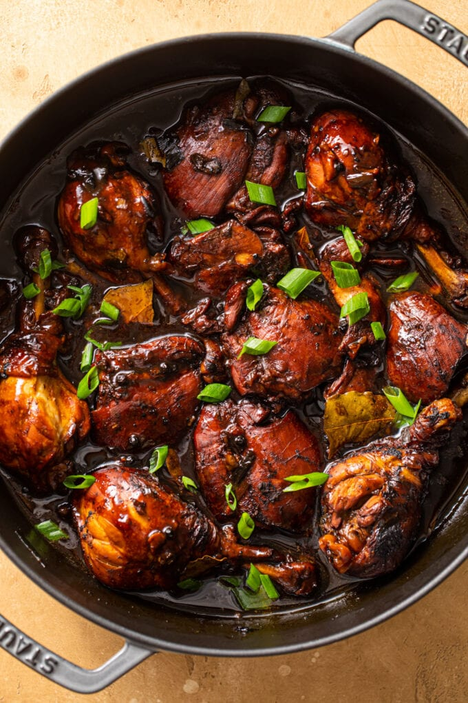

Chicken Adobo

Description
Chicken adobo is a traditional dish of the Philippines. It consists of braising chicken in a blend of soy sauce and vinegar along with aromatics like garlic, peppercorns, bay leaves, and more. The taste is salty, vinegary, slightly sweet, and tangy with bits of heat. Filipino chicken adobo is a fairly straightforward and simple recipe to make.
Engredients
- Chicken: I use both thighs (boneless/skinless) and drumsticks. The combination of both is typically common with chicken adobo and what I recommend. See notes below for other pieces of chicken.
- Garlic: This is a big-time flavor bomb and staple of this signature dish- yes, my recipe calls for 12 cloves of garlic, you read that correct, ha!
- Scallions: You may also know them as green onions, they are used in the marinade as an aromatic as well as for garnishing the finished dish.
- Black peppercorns: This is what adds that pop of heat in each bite. Since peppercorns are whole and not ground, they add a tiny kick in every bite. It also adds a contrast in flavor against the salty/tangy/vinegar flavors.
- Brown sugar: A touch of sweetness to provide balance in the chicken adobo.
- Rice vinegar: This is a vinegar made from fermented rice with a sweet + delicate taste. My recipe calls for unseasoned rice vinegar which does not have added salt/sugar, etc. Soy sauce gives plenty of saltiness already.
- Distilled vinegar: Traditional and common household vinegar- this one has a more sour and harsher taste than rice vinegar.
- Soy souce: One of the main liquids that makes up the sauce, low-sodium, to control the overall saltiness.
- Bay leaves: An aromatic leaf that gives nice flavor in braised dishes.
- Olive oil: For searing the chicken until browned all over.
Steps
- Marinate the chicken. Combine the chicken pieces along with all of the liquids and aromatics together. Transfer the mixture into the fridge to marinate for at least 2 hours or more preferred, overnight.
- Brown the chicken pieces. For big, deep flavor, searing the chicken is so important. The browning process, aka the Maillard reaction, creates a level of caramelization which further transcends the flavor development.
- Pour in the marinade. After the chicken pieces have been browned, add in the marinade and let it come up to a slight boil.
- Add the chicken. Place the chicken pieces back into the pot with the sauce.
- Simma, simma. Let everything simmer together for 30 minutes, then go back to the pot and flip the chicken over and continue simmering on the other side for another 30 minutes. The sauce will have thickened.
- Serve it up! Enjoy the chicken adobo with jasmine rice or as desired!
Home